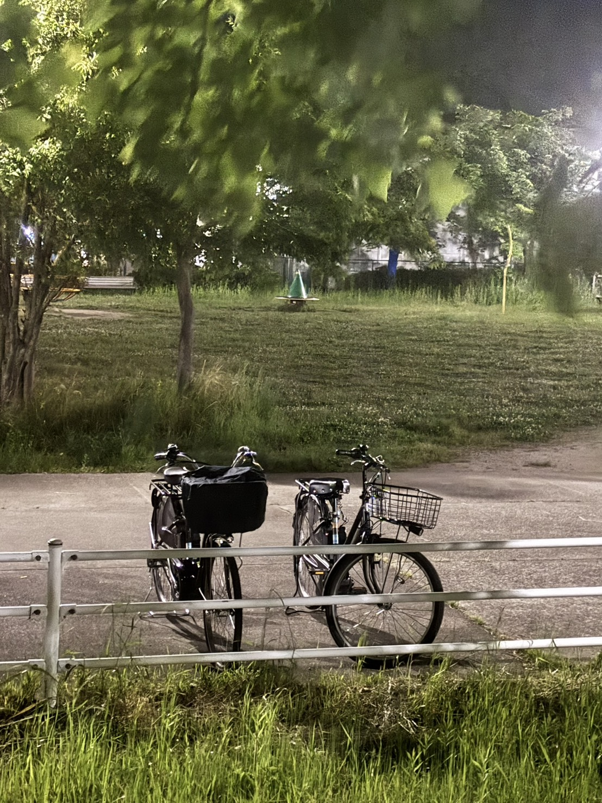
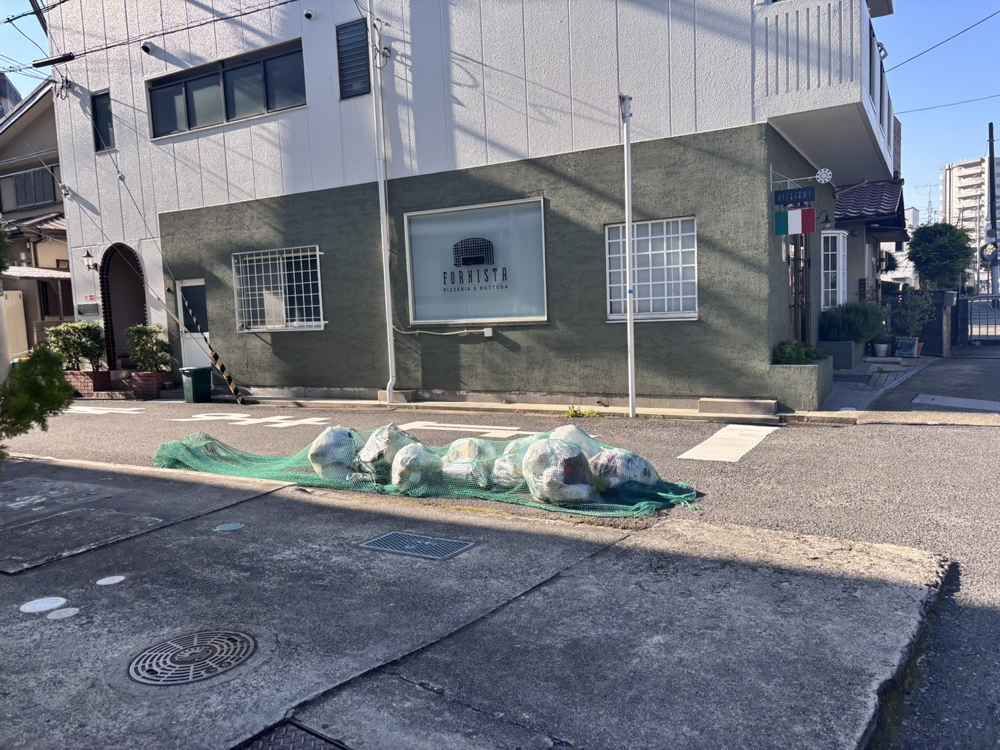
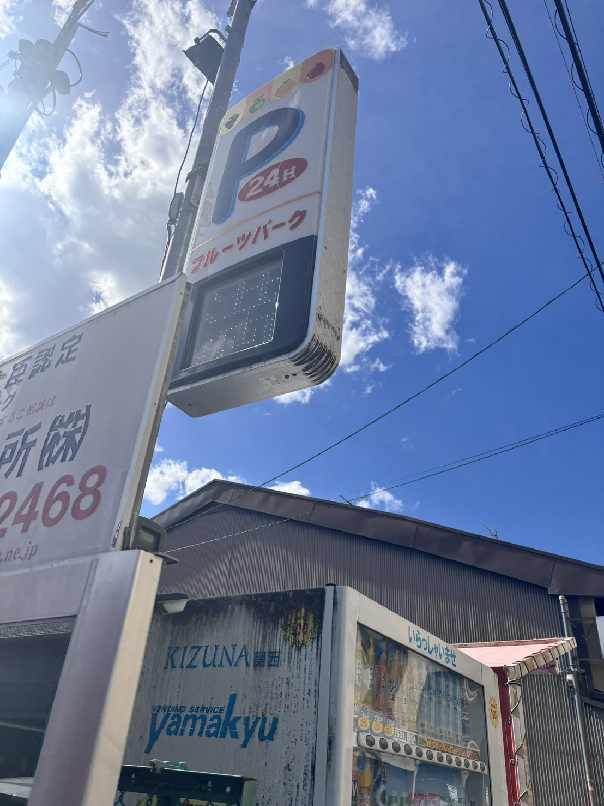
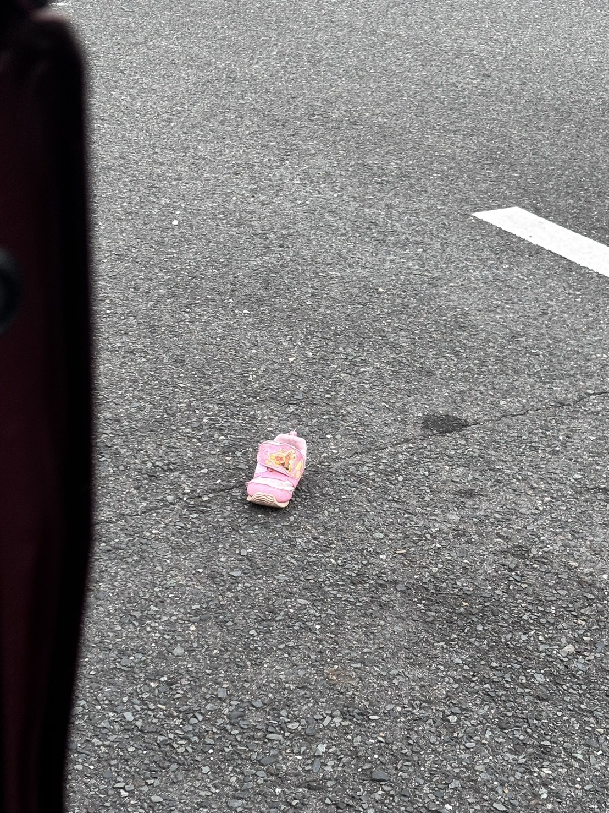
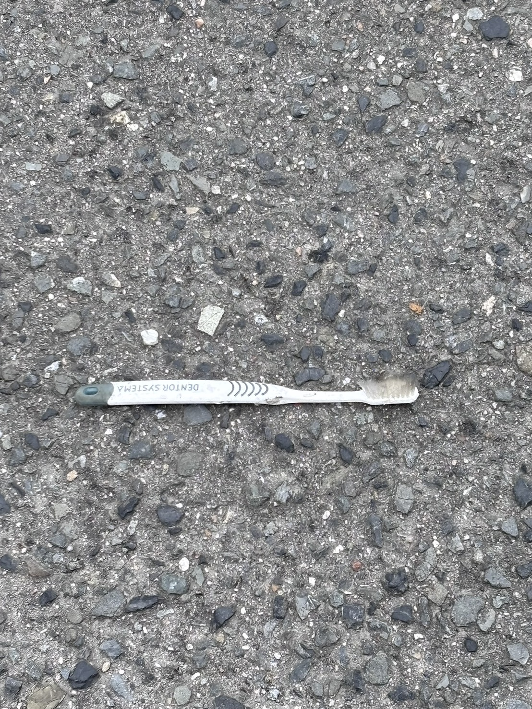
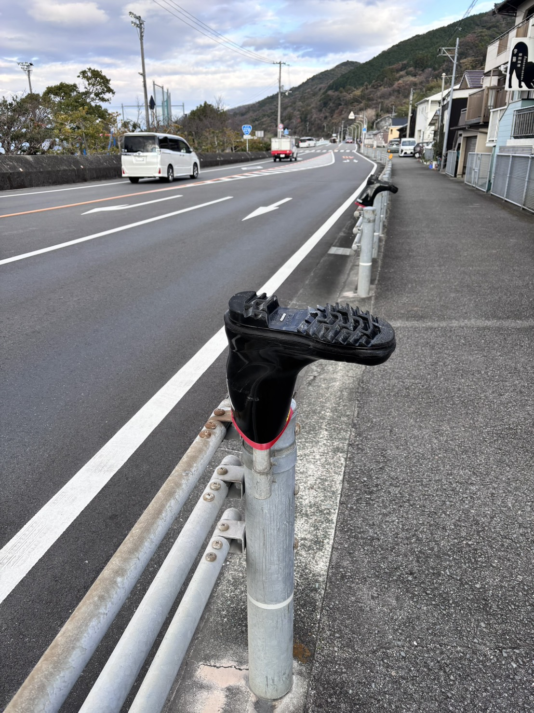
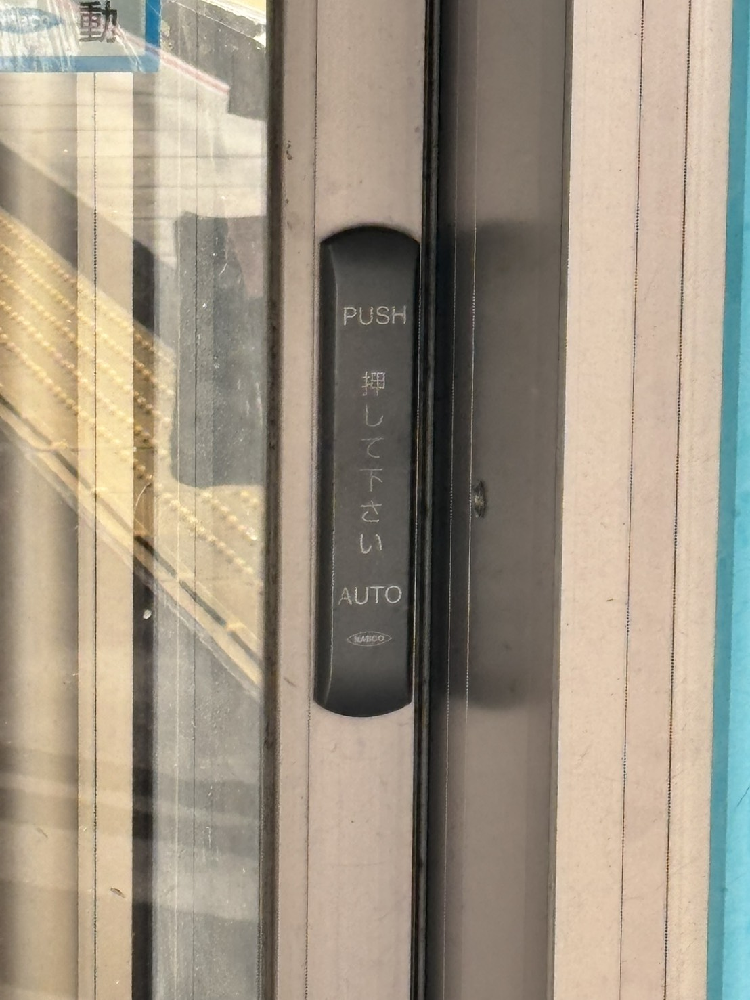
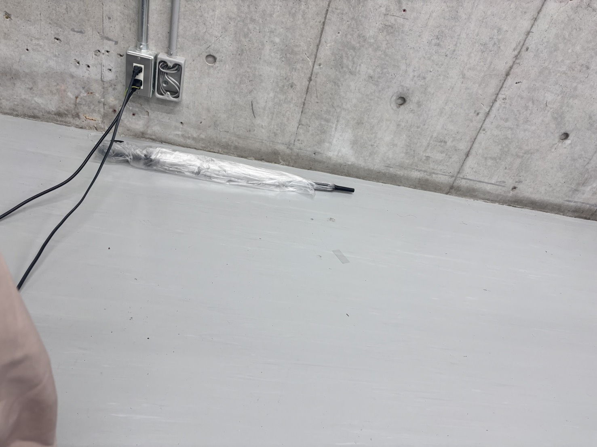

DEPTH 01
さっきまで、誰かが使っていた。
01 / SECONDS AGO
持ち主お出かけ中
01 / A FEW MINUTES AGO
誰かの列の最後尾が、まだそこに。
01 / CONSTANT PRESENCE

夜の公園、持ち主はすぐそこ
01 / TONIGHT
DEPTH 02
吐き出された煙の跡
02 / A FEW HOURS AGO

朝の生活の、重たい集積
02 / THIS MORNING

空車を待つ誰かの、焦燥と時間
02 / TODAY

晴れた瞬間に、他人になったビニール
02 / YESTERDAY
DEPTH 03

もう磨かれることのない毛先
03 / A FEW WEEKS AGO

追いかけっこに置いていかれた
03 / A FEW MONTHS AGO
DEPTH 04

数万回の指先の記憶、すり減った樹脂
04 / YEARS OF ACCUMULATION
消えない落書き、消えた誰か。
04 / ETERNAL TRACE

誰かが見つけてくれるのを待っている
04 / FOSSILIZED PRESENCE